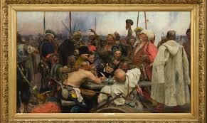

Dokumentation

Reply of the Zaporozhian Cossacks is a painting by Ilya Repin.[1] It is also known as Cossacks of Saporog Are Drafting a Manifesto and Cossacks are Writing a Letter to the Turkish Sultan[a].